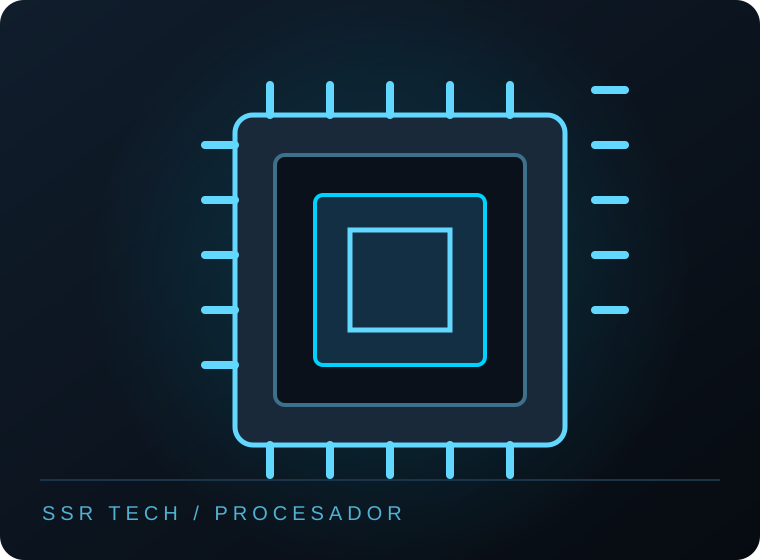

01 · RENDIMIENTO
Procesador
Es el cerebro del computador: procesa instrucciones y ayuda a que tus programas, juegos y tareas funcionen con fluidez.
- Socket y generación
- Núcleos e hilos
- Frecuencia y consumo